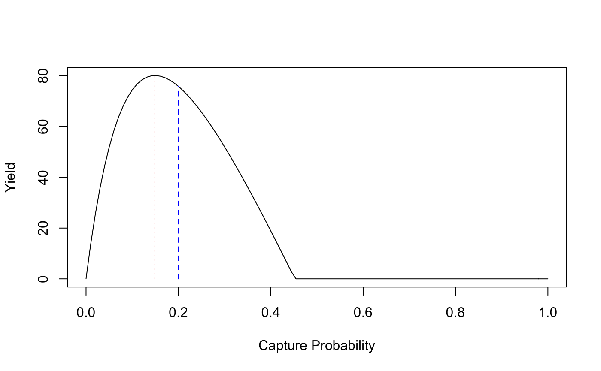

Introduction
ypr is an R package that implements equilibrium-based yield per recruit methods (Walters and Martell 2004).
The yield can be based on the number of fish caught (or harvested) or biomass for all fish or just large (trophy) individuals.
The key life history parameters are
- The growth coefficient (
k) and mean maximum length (Linf) from the Von Bertalanffy growth curve - The length at which 50% mature (
Ls) - The length at which 50% vulnerable to harvest (
Lv) - The number of spawners per spawner at low density (
Rk)
The calculations do not account for parameter uncertainty, environmental fluctuations, predator-prey dynamics, angler responses or density-dependent growth.
Information
For definitions of all 29 population parameters see ?ypr_population.
For an explanation of the calculations see the ypr vignette.
Demonstration
Schedule
library(ypr)
population <- ypr_population(Rk = 5, Ls = 50, Rmax = 100)
ypr_plot_schedule(population, x = "Length", y = "Spawning")
head(ypr_schedule(population))
#> # A tibble: 6 x 11
#> Age Length Weight Fecundity Spawning NaturalMortality Vulnerability
#> <int> <dbl> <dbl> <dbl> <dbl> <dbl> <dbl>
#> 1 1 13.9 27.0 27.0 3.13e-56 0.181 3.13e-56
#> 2 2 25.9 174. 174. 2.91e-29 0.181 2.91e-29
#> 3 3 36.2 476. 476. 1.04e-14 0.181 1.04e-14
#> 4 4 45.1 918. 918. 3.46e- 5 0.181 3.46e- 5
#> 5 5 52.8 1469. 1469. 9.95e- 1 0.181 9.95e- 1
#> 6 6 59.3 2090. 2090. 10.00e- 1 0.181 10.00e- 1
#> # ... with 4 more variables: Retention <dbl>, FishingMortality <dbl>,
#> # Survivorship <dbl>, FishedSurvivorship <dbl>Installation
To install the latest development version from GitHub
# install.packages("devtools")
devtools::install_github("poissonconsulting/ypr")To install the latest development version from the Poisson drat repository
# install.packages("drat")
drat::addRepo("poissonconsulting")
install.packages("ypr")Interaction
To interactively explore the effects of altering individual parameters on the schedule, stock-recruitment and yield see the ypr shiny app.

A screenshot of the yield from the ypr shiny app
Citation
To cite package 'ypr' in publications use:
Joe Thorley (2018). ypr: Yield Per Recruit. R package version
0.1.0.9022. https://github.com/poissonconsulting/ypr
A BibTeX entry for LaTeX users is
@Manual{,
title = {ypr: Yield Per Recruit},
author = {Joe Thorley},
year = {2018},
note = {R package version 0.1.0.9022},
url = {https://github.com/poissonconsulting/ypr},
}Creditation
Development of ypr was supported by the Habitat Conservation Trust Foundation and the Ministy of Forests, Lands and Natural Resource Operations.
The hex was designed by The Forest.
Contribution
Please report any issues.
Pull requests are always welcome.
Please note that this project is released with a Contributor Code of Conduct. By participating in this project you agree to abide by its terms.